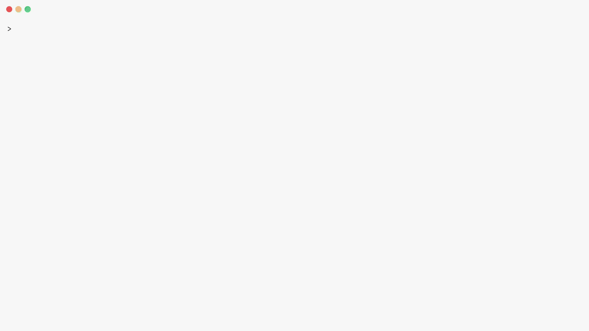

Skyward

Cloud accelerators with a single API



Skyward is a Python library for ephemeral accelerator compute. Spin up cloud accelerators (GPUs, TPUs, Trainium, and more), run your ML training code, and tear them down automatically. No infrastructure to manage.
import skyward as sky
@sky.function
def train(data):
import torch
import torch.nn as nn
model = nn.Sequential(
nn.Linear(784, 128),
nn.ReLU(),
nn.Linear(128, 10),
).cuda()
optimizer = torch.optim.Adam(model.parameters())
for batch, targets in data:
loss = nn.functional.cross_entropy(model(batch.cuda()), targets.cuda())
loss.backward()
optimizer.step()
return model.state_dict()
with sky.Compute(
provider=sky.AWS(),
accelerator=sky.accelerators.H100(),
nodes=4,
plugins=[sky.plugins.Torch()],
) as compute:
result = train(my_data) @ compute # broadcast to all 4 nodes
torch is imported inside the function: it needs to exist on the H100, not on your laptop. @sky.function makes the call lazy — nothing runs until an operator gives it a target. The with block provisions the machines, waits for them to be ready, and tears them down on exit.
A single API. Any cloud.¶
Provider accounts describe a login and its non-secret configuration. Changing the provider does not change the function being submitted.
The daemon keeps provider accounts and never includes their credentials in a provider response. Offers are fetched through the provider adapter and cached according to that provider's freshness interval. A Compute may contain several sky.Spec values; the control plane selects a matching offer according to selection.
Fully customizable.¶
Define the remote environment declaratively. Python version, packages, system dependencies, environment variables, user-code files, volumes, and ports are part of the Compute definition.
with sky.Compute(
provider=sky.AWS(),
accelerator=sky.accelerators.H100(),
image=sky.Image(
python="3.12",
pip=["torch", "transformers", "my-internal-lib"],
apt=["ffmpeg", "libsndfile1"],
pip_indexes=[
sky.PipIndex(
url="https://pypi.internal.co/simple",
packages=("my-internal-lib",),
),
],
),
) as compute:
result = train(data) >> compute
Plugins are immutable values serialized into the Compute definition. Built-in plugins configure the image, bootstrap, worker lifetime, task execution, or client-side integration. See Plugins.
Operators for real workloads.¶
The operators choose how a lazy call becomes a task.
| Operator | Result |
|---|---|
task() >> compute |
Run one task on one node and wait for its result |
task() @ compute |
Create one execution per ready node admitted for the broadcast |
task() > compute |
Start asynchronously and return a Future |
(task_a() & task_b()) >> compute |
Submit independent tasks and collect their results |
sky.gather(task_a(), task_b(), stream=True) >> compute |
Yield grouped results as executions finish |
@sky.stream plus >> |
Consume a generator result item by item |
@sky.function
def evaluate(weights: bytes) -> float:
return score(weights)
with sky.Compute(
provider=sky.AWS(),
accelerator=sky.accelerators.H100(),
nodes=4,
plugins=[sky.plugins.Torch()],
) as compute:
weights = train(data) >> compute
scores = evaluate(weights) @ compute
pending_score = evaluate(weights) > compute
score = pending_score.result()
A task keeps its identity across execution retries, so the Future you hold stays valid even when the node under it is replaced.
Spot instances without the headache.¶
Save 50–90% on compute. Skyward handles spot allocation, preemption detection, and automatic node replacement. You pick a strategy.
with sky.Compute(
provider=sky.AWS(),
accelerator=sky.accelerators.H100(),
nodes=4,
allocation="spot", # or "on_demand", "spot_if_available", "cheapest"
) as compute:
result = train(data) @ compute
# node preempted? already replaced. your code doesn't change.
The cheapest GPU across clouds.¶
Define multiple specs across providers. Skyward ranks every matching offer by price and takes the cheapest one that's actually available — if provisioning fails, it falls through to the next.
with sky.Compute(
sky.Spec(provider=sky.VastAI(), accelerator=sky.accelerators.H100()),
sky.Spec(provider=sky.AWS(), accelerator=sky.accelerators.H100()),
sky.Spec(provider=sky.RunPod(), accelerator=sky.accelerators.H100()),
selection="cheapest",
) as compute:
result = train(data) @ compute
Compute that outlives your process.¶
The machines belong to a daemon, not to the object in your script. Leave one running and attach to it later — from another process, another day.
with sky.Compute(
provider=sky.AWS(),
accelerator=sky.accelerators.H100(),
nodes=sky.Nodes(initial=2, max=8),
name="training",
delete_on_exit=False,
) as compute:
train(data) >> compute
with sky.Compute.attached("training") as compute:
evaluate(weights) >> compute
With no url, that daemon runs inside your own process against a local SQLite database. With url or SKYWARD_URL, it's one you started with sky server start. Nothing in your code changes.
Batteries included.¶
Plugins configure distributed runtimes, install dependencies, and handle framework-specific setup. You pass them in.
with sky.Compute(
provider=sky.AWS(),
accelerator=sky.accelerators.H100(),
nodes=4,
plugins=[
sky.plugins.Torch(),
sky.plugins.Accelerate(config={"fsdp": {"sharding_strategy": "FULL_SHARD"}}),
],
) as compute:
result = finetune(model, dataset) @ compute
- PyTorch — DDP, FSDP, NCCL backend
- Accelerate — HuggingFace Trainer, DeepSpeed, FSDP
- JAX — multi-host distributed initialization
- Keras 3 — backend-agnostic data parallelism
- Joblib — drop-in parallel backend for scikit-learn
- cuML — GPU-accelerated scikit-learn estimators
Runtime information and distributed state.¶
Code running on a node can ask for its topology without contacting the client:
@sky.function
def rank_info() -> dict[str, object]:
info = sky.instance_info()
return {
"rank": info.rank,
"nodes": info.nodes,
"worker": info.worker,
"is_head": info.is_head,
}
sky.shard() makes a deterministic contiguous slice for the current rank. sky.dict, sky.set, sky.counter, sky.queue, sky.registry, sky.barrier, and sky.lock provide named state shared by the nodes of one Compute. Values are serialized; collection names identify the shared state.
Local development.¶
The Container provider exercises the same SSH bootstrap and control-plane path without cloud credentials:
The provider requires Docker by default. For function-only tests, call the original implementation through .local:
Get started.¶
- Install and run — Install the SDK and run the first task
- Core concepts — Lazy calls, Compute resources, tasks, and leases
- Architecture — The daemon, control plane, and node runtime
- Providers — Provider accounts and accelerator offers
- Plugins — PyTorch, JAX, Keras, HuggingFace, and more
- API reference — Public Python types and functions